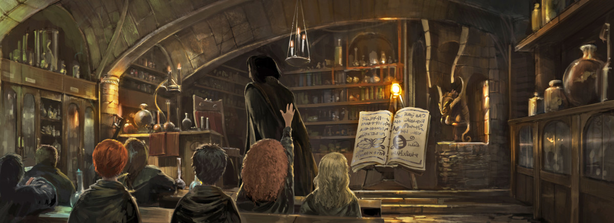

Our degree program for 2021
According to the novels, admission to Hogwarts is selective, in that children who show magical ability will automatically gain a place,
and squibs cannot attend the school as students (though they can work there in other roles, as Argus Filch does).
A magical quill at Hogwarts detects the birth of magical children and writes their names into a large parchment book,
but there is no admission test because "you are either magical or you are not."Every year, a teacher checks this book and
sends a letter to the children who are turning eleven. Acceptance or refusal of a place at Hogwarts must be posted by 31 July.
The letter also contains a list of supplies like spell books, uniform, and other things that the student will need. The prospective
student is expected to buy all the necessary materials, normally from shops in Diagon Alley, a concealed street near Charing Cross
Road in London that can be found behind the wizarding pub, The Leaky Cauldron. Students who cannot afford their supplies can receive
financial aid from the school, as happened with the young orphan Tom Riddle.
Letters to Muggle-born witches and wizards, who may not be aware of their powers and are unfamiliar with the concealed wizarding
world, are delivered in person by a member of Hogwarts staff, who then explains to the parents or guardians about magical
society, and reassures them regarding this news.
Though the school is in Great Britain, its catchment area is the wider British Isles, as Irish students can also attend.
Each student is allowed to bring an owl, a cat or a toad. Along with the acceptance letter, first-year students are sent a
list of required equipment which includes a wand, subject books, a standard size 2 pewter cauldron, a set of brass scales,
a set of glass or crystal phials, a kit of basic potion ingredients (for Potions), and a telescope (for Astronomy). The
Hogwarts uniform consists of plain work robes in black, a plain black hat, a pair of protective gloves, and a black winter
cloak with silver fastenings. Each uniform must contain the wearer's nametag. First years are not allowed a broomstick of
their own, though an exception to this rule is made for Harry in his first year after he demonstrates an excellent ability
as a Seeker in Quidditch.


Leave a comment